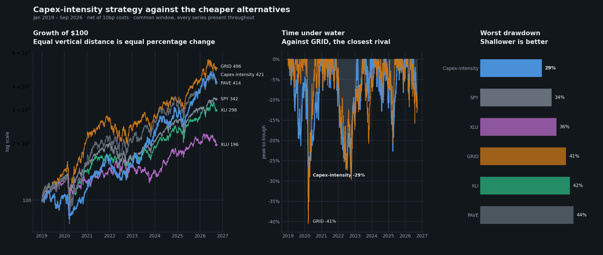
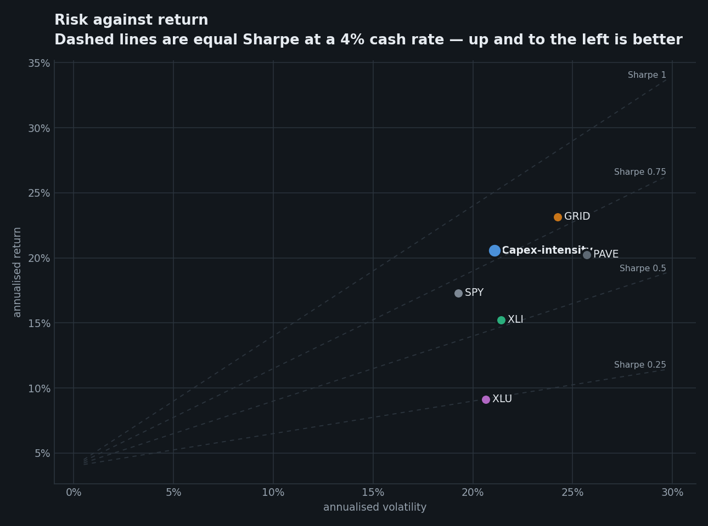
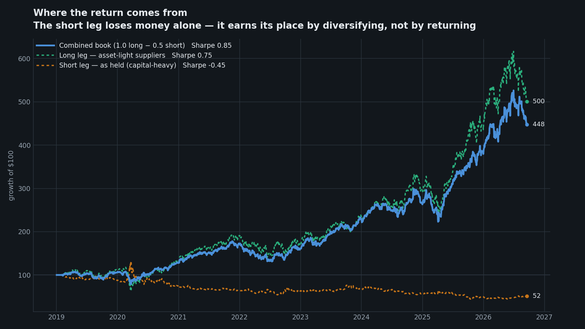

Internal. Full specification, evidence, traps and known weaknesses. Not for distribution.
Version 22 September 2026 · implemented in capex_intensity_strategy/ · not live.
Universe (mechanical, point-in-time).
1731 electrical work · 3470 coating · 3490 fabricated metal · 3510 engines
& turbines · 3550 special industry machinery · 3561 pumps · 3569 general
industrial machinery · 3585 HVAC · 3590 misc industrial · 3600 electronic &
electrical equipment · 3612 transformers · 3613 switchgear · 3620 electrical
apparatus · 3621 motors & generators · 3670 electronic components · 3679
components NEC · 3690 misc electrical · 3823/3829 instruments · 5063 electrical
wholesale · 1623 power-line construction · 4911 electric services · 4922/4923/
4924 gas transmission & distribution · 4931 electric & other combined · 4991
cogeneration · 1221 coal.
Excluded deliberately: 3674 semiconductors (505 filers; admits AMD/AVGO/ARM),
1311 crude oil & gas (~900), 1040 metal mining (523, mostly gold).Score. Point-in-time TTM capital expenditure ÷ TTM revenue, from EDGAR companyfacts,
keyed on each fact's filed date. Only single-quarter flow facts (60–200 day spans).
Four filed quarters required. Restatements resolve to latest-filed-as-of-date.
Book. Long lightest quartile equal-weighted; short heaviest quartile at 0.5×; monthly rebalance; 10bp costs; 20% vol target, leverage cap 1.5×.
| period | CAGR | Vol | Sharpe | MaxDD | Calmar |
|---|---|---|---|---|---|
| 2019–2022 (in-sample) | 11.0% | 21.1% | 0.41 | −29.1% | 0.38 |
| 2023–2026 (OOS) | 31.8% | 21.1% | 1.23 | −22.7% | 1.40 |
| 2025–2026 (OOS) | 29.5% | 21.6% | 1.12 | −22.6% | 1.30 |
| 2019–2026 | 20.6% | 21.1% | 0.80 | −29.1% | 0.71 |



| leg | 2023–26 Sharpe | 2025–26 Sharpe | 2019–26 Sharpe | 2019–26 CAGR |
|---|---|---|---|---|
| Long — asset-light suppliers | 1.12 | 1.09 | 0.75 | +23.3% |
| Short — as held (capital-heavy) | −0.42 | −0.40 | −0.45 | −8.2% |
| Short basket viewed long-only | −0.02 | −0.03 | +0.08 | +3.4% |
| Combined 1.0L − 0.5S | 1.24 | 1.24 | 0.85 | +21.5% |
The short leg loses money standalone and still improves the book — Sharpe 1.12 → 1.24.
It is a hedge, not an alpha source. A position improves portfolio Sharpe when its own
Sharpe exceeds correlation × portfolio Sharpe, which is a much lower bar than zero. This
is the same arithmetic recorded in docs/RESEARCH-LOG.md (interconnection-queue thread).
Practical consequence: do not market the short leg as a return driver, and do not size it as one. Past 0.5× it degrades the book.
| measure | result |
|---|---|
| Beta to daily change in 10y real yield | −0.0001, t = −0.03 — rate-neutral |
| High real-yield regime (above expanding median) | Sharpe 0.95, CAGR 24.4% |
| Low real-yield regime | Sharpe 0.58, CAGR 14.9% |
| Real yields rising (3m change > 0), 2025–26 | Sharpe 1.57 |
| Real yields falling, 2025–26 | Sharpe 0.60 |
It has no measurable duration beta, but it is structurally long the cost of capital. The short leg is capital-hungry, long-duration businesses — utilities, pipelines, developers — whose valuations and economics improve when capital is cheap. Expensive capital punishes them and rewards the asset-light long leg.
Weak environment: a sustained low or falling real-rate regime (Sharpe 0.58 vs 0.95). That is the mirror image of the shipped Screened Electrification book, whose disclosed primary risk is also a falling-rate reversal — so the two books share this exposure rather than offsetting it.
Yes — materially, and more than it helps its own book.
| base | + capex short | 2023–26 Sh / Cal | 2025–26 Sh / Cal |
|---|---|---|---|
screen +val+sleeve |
0.00× | 1.56 / 1.82 | 1.30 / 1.57 |
| 0.25× | 1.67 / 2.02 | 1.41 / 1.74 | |
| 0.50× | 1.62 / 2.08 | 1.40 / 1.79 | |
screen +val+sleeve+short |
0.00× | 1.54 / 2.31 | 1.46 / 2.32 |
| 0.25× | 1.59 / 2.66 | 1.56 / 2.60 | |
| 0.50× | 1.47 / 2.69 | 1.48 / 2.64 |
A 0.25× capex-intensity short sleeve improves the shipped book on both metrics in both windows — the best single result produced in this line of work (2025–26 Sharpe 1.56, Calmar 2.60). It also stacks with the existing DLR/EQIX short rather than replacing it: the two hedge different things (capital intensity vs rate-sensitive duration).
This is arguably the most commercially useful finding here — it improves an already-shipped book without changing its long leg.
| universe | names | 2023–26 Sh / Cal | 2025–26 Sh / Cal | 2019–26 Sh |
|---|---|---|---|---|
| Power / electrification | ~150–190 | 1.23 / 1.40 | 1.12 / 1.30 | 0.80 |
| Non-power industrials (7 themes) | 74 | 0.79 / 1.20 | 0.46 / 0.79 | 0.52 |
| — semicap | 13 | 0.11 / 0.10 | 0.39 / 0.55 | 0.26 |
| — reshoring / E&C | 14 | 0.48 / 0.48 | 0.71 / 1.21 | 0.46 |
The factor is not power-exclusive, but power is where it works. Outside power it is positive and roughly half to a third as strong. Two readings, and I cannot separate them with this evidence:
Implication: treat it as a sector-specific application. Do not market it as a general equity factor without running the broad test properly.
Seven alternative lexicons were tested against one standard: does the vocabulary recover issuers the SIC screen cannot reach, without admitting unrelated ones?
| lexicon | listed | new vs SIC | what the new names were |
|---|---|---|---|
| Nuclear fuel cycle | 42 | 16 | Cameco, Centrus, Denison, NexGen, enCore, Ur-Energy |
| Battery storage | 94 | 53 | Albemarle, BHP, micro-caps |
| Hydrogen | 66 | 46 | BP, Chevron, Air Products, CF |
| Solar | 52 | 37 | Applied Materials, CleanSpark |
| Wind | 34 | 24 | Eni, Equinor, Enbridge |
| Marine / tidal | 9 | 6 | TechnipFMC, Oceaneering, Ecopetrol |
| Geothermal | 6 | 5 | Newmont, Schlumberger |
Nuclear vocabulary is a term of art; the others are ESG boilerplate. An issuer writes "yellowcake" only if it handles the material. "Offshore wind" and "tidal energy" appear in every integrated oil company's sustainability section.
Other verticals need no lexicon because SIC already reaches them: storage (Fluence, Eos, Enovix, Amprius — all 3690), hydrogen (Plug, Bloom, FuelCell, Ballard — all 3620), geothermal (Ormat — 4911). Nuclear fuel was the only genuine structural gap: 0 of 8 names reachable.
Widening was tested and rejected:
| variant | 2023–26 Sharpe | 2025–26 Sharpe |
|---|---|---|
| Nuclear only (shipped) | 1.23 | 1.12 |
| + solar | 0.90 | 1.01 |
| + wind | 1.23 (no change) | 1.12 |
Solar costs a third of the Sharpe. ARRY and NXT are genuinely asset-light so they rank as longs, but their revenue depends on subsidy and they have no pricing power. Capital intensity measures where capital sits, not whether revenue is durable — a real and unfixed limitation of the signal. Wind changes nothing: no US-listed pure-play wind manufacturer clears the liquidity floor (BWEN too small, TPIC delisted).
Honest accounting, because most of it turned out not to be:
Load-bearing: - Merit-order economics — knowing who funds capacity and who is paid by it. This is the entire thesis and it is domain knowledge, not a screen someone would reach by accident. - SEC classification of the fuel cycle. Knowing that uranium miners file under generic mining codes is why the universe is complete. No amount of statistics recovers it. - Fuel-cycle vocabulary. Knowing "yellowcake" and "uranium concentrates" are terms of art while "green hydrogen" is boilerplate. - Intermittent vs firm capacity. Knowing why solar suppliers are structurally different from switchgear suppliers explains §7's failure rather than leaving it a mystery.
Not load-bearing — tested and failed (see docs/power-market-signal-root-cause-results.md):
- ISO/LMP prices, congestion, load forecasts, generation mix, capacity auctions, storage
levels, spark spreads, weather. ~42 attempts. The mechanism: energy futures markets
efficiently price public power fundamentals, and equities price off those futures, so
public ISO data reaches equities already impounded.
- Grid-stress indices specifically: a rolling grid-stress beta inverts — by 2025–26 it
ranks intermittent solar as most stress-exposed and uranium/merchant generation as least.
The usable conclusion: power-market knowledge pays in classification, not in timing. It tells you which companies belong in the universe and why the categories differ. It does not tell you when to be long.
Everything needed to rebuild the strategy from nothing. Each step names the module and function that implements it.
edgar.ticker_to_cik() → https://www.sec.gov/files/company_tickers.json (~10,459 filers),
cached as data/cache/ticker_cik.json.
Trap: SEC returns HTTP 403 unless the
User-Agentcarries a contact address, andwww.sec.gov/files/*additionally rejects an explicitAccept: application/json(whileefts.sec.govrequires it)._headers(accept_json=False)handles the split. Both cost a silent failure when first built.
edgar.sic_population(sic) → browse-edgar?action=getcompany&SIC=…&type=10-K&output=atom,
paginated 100 per page to a 900 cap, parsed with
<company-info[^>]*> → <cik>. Run for every code in data/sic_codes.csv.
Trap: the tag carries attributes, so a bare
<company-info>regex matches nothing, and EDGAR emits mangledARRAY(0x…)company names — take the CIK, ignore the name.
Codes, and the three deliberate exclusions, are listed in §1. Yield: 2,535 filers, 367 currently listed.
universe.discover_lexicon_members(fetch, cik_to_ticker, years).
For each universe-year Y, query efts.sec.gov/LATEST/search-index with
forms=10-K,40-F,20-F and startdt=Y-2-01-01, enddt=Y-1-12-31 — strictly before Y
begins — for each phrase in config.FUEL_CYCLE_LEXICON. Union the CIKs, map to tickers,
record the year. A name stays eligible from its first qualifying year onward.
fetch_ciks is injected rather than imported, so this is testable with no network.
Adjusted closes and volume for every candidate plus benchmarks. Require
MIN_PRICE_HISTORY_DAYS = 400. universe.liquidity_mask() computes a
252-day rolling median dollar volume (min 120 periods), resampled to month-end, and
requires > $10M. The universe therefore breathes: 100 names (2019) → 131 (2023) → 159 (2025).
edgar.company_facts(cik) → data.sec.gov/api/xbrl/companyfacts/CIK##########.json.
Keep only us-gaap USD facts from 10-Q/10-K with all of start, end, filed, and a
span of 60–200 days.
| item | tag preference order |
|---|---|
revenue |
Revenues → RevenueFromContractWithCustomerExcludingAssessedTax → …IncludingAssessedTax → SalesRevenueNet |
capex |
PaymentsToAcquirePropertyPlantAndEquipment |
First tag with data wins (break), so a filer reporting both Revenues and the ASC-606
tag is not double-counted.
Why the 60–200 day span filter: XBRL mixes quarterly, year-to-date and annual facts under the same tag. Without it a trailing-four-quarter sum silently double-counts.
fundamentals.ttm_panel(facts, dates). For each month-end d:
visible = facts[facts.filed <= d] — the single most important line in the codebase.groupby(ticker, item, end).last() on filing order — restatements resolve to the most
recently filed value as known at d.end and sum.fundamentals.capex_intensity(panel) → wide date × ticker frame of
TTM capex ÷ TTM revenue, with revenue ≤ 0 mapped to NaN.
Trap:
pivot_tabledrops all-NaN columns by default, so a name with unusable revenue would vanish silently instead of being excluded explicitly.dropna=Falsekeeps it as a visible NaN column.
universe.membership() = liquidity mask AND lexicon effective-date mask. Structural (SIC)
members always pass the lexicon leg; lexicon members pass only from their first qualifying year.
backtest.target_weights(score, mask, quantile=0.25, short_weight=0.5):
eligible = score.where(mask)
ranks = eligible.rank(axis=1, method="first")
n = eligible.notna().sum(axis=1)
n_pick = max(1, round(n * 0.25)) if n >= 2 else 0
longs = ranks <= n_pick
shorts = ranks > n - n_pick
weights = longs/‖longs‖ − shorts/‖shorts‖ × 0.5
Trap — this one is load-bearing. Selecting by percentile (
rank(pct=True)) with the defaultaveragetie handling can empty a leg entirely: eight tied names in a 13-name pool all land at pct 0.35 and none clear a 0.25 cut, while the short bucket fills normally. Counting withmethod="first"guarantees both legs are populated and raised realised breadth from ~15/16 to 22/22 names.
Long leg is fully invested; short leg is scaled to 0.5×. The book is net long by design.
backtest.run(weights, returns):
held.shift(1)).|Δweight| × 10bp.min(20% / trailing-42-day realised vol, 1.5), lagged one day.API note:
costandvol_targettakeNoneto mean use the config default. Pass0to disable.vol_target=Nonesilently enables 20% targeting — this cost a confusing debugging session and now has a regression test.
backtest.summarise() uses the repo-standard grid_equipment_basket.backtest.compute_metrics
at RF = 4%, so every figure is comparable with the shipped book.
backtest.diagnostics() reports average long/short breadth and annualised turnover.
| module | responsibility | network? |
|---|---|---|
config.py |
every frozen parameter; never revised from results | no |
edgar.py |
ticker_to_cik · sic_population · full_text_ciks · company_facts · fetch_facts |
yes — the only one |
fundamentals.py |
load_facts · ttm_panel · capex_intensity |
no |
universe.py |
load_sic_codes · liquidity_mask · lexicon_mask · membership · discover_lexicon_members |
no |
backtest.py |
target_weights · run · diagnostics · summarise · format_summary |
no |
plots.py |
comparison figures, light and dark validated palettes | no |
pipeline.py |
end-to-end build, returns every intermediate | via edgar |
__main__.py |
CLI | via pipeline |
data/sic_codes.csv |
the only seed data | — |
All logic is pure; edgar.py is the sole network boundary, which is why the 18 tests run
offline against synthetic filings.
data/cache/ticker_cik.json · candidates.parquet · lexicon_members.json · prices.parquet ·
dollar_volume.parquet · edgar_facts.parquet. Delete any to force a refetch, or pass
--refresh.
python -m capex_intensity_strategy # cached
python -m capex_intensity_strategy --plot # + comparison charts
python -m capex_intensity_strategy --short-weight 0 # long only
python -m capex_intensity_strategy --refresh # re-fetch (20-40 min)
Outputs summary.csv, daily_returns.csv, weights.csv, diagnostics.csv.
tests/capex_intensity_strategy/, 18 tests, offline)Point-in-time filing visibility · four-quarter requirement · light-vs-heavy separation · NaN on non-positive revenue · liquidity exclusion · lexicon effective-dating · lexicon look-back window closing before the universe year · long/short side correctness · leg sizing · long-only mode · cost and vol-target behaviour · no-lookahead · breadth diagnostics · SIC-table exclusions.
python utils/render_md.py output_html/capex-intensity-research_details.md \
--out output_html --theme dark
python utils/render_md.py output_html/capex-intensity-proposal.md \
--out output_html --theme prospectus
python -m capex_intensity_strategy --plot
python -m capex_intensity_strategy --short-weight 0 # long only
python -m capex_intensity_strategy --refresh # re-fetch EDGAR + prices
Tests: tests/capex_intensity_strategy/ (18, offline).
Evidence: docs/capex-intensity-rule-results.md,
docs/algorithmic-long-short-books-results.md §6, docs/RESEARCH-LOG.md.